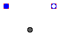

Anton Haumer
Technical Consulting & Electrical Engineering
A-3423 St.Andrae-Woerdern, Austria
email: a.haumer@haumer.at
Dr.Christian Kral & Markus Plainer
Österreichisches Forschungs- und Prüfzentrum Arsenal Ges.m.b.H.
arsenal research
Giefinggasse 2
A-1210 Vienna, Austria
Copyright © 1998-2007, Modelica Association, Anton Haumer and arsenal research.
The Modelica package is free software; it can be redistributed and/or modified under the terms of the Modelica license, see the license conditions and the accompanying disclaimer here.
| Name | Description |
|---|---|
| Ambient with constant properties | |
| Ambient with prescirbed properties | |
| Defines absolute pressure level | |
| Enforces constant volume flow | |
| Enforces prescribed volume flow | |
| Enforces constant pressure increase | |
| Enforces prescribed pressure increase | |
| IdealPump | Model of an ideal pump |
 Modelica.Thermal.FluidHeatFlow.Sources.Ambient
Modelica.Thermal.FluidHeatFlow.Sources.Ambient
| Type | Name | Default | Description |
|---|---|---|---|
| Medium | medium | FluidHeatFlow.Media.Medium() | Ambient's medium |
| Pressure | p_Ambient | 0 | Ambient's pressure [Pa] |
| Temperature | T_Ambient | Modelica.SIunits.Conversions... | Ambient's temperature [K] |
| Type | Name | Description |
|---|---|---|
| FlowPort_a | flowPort |
model Ambient "Ambient with constant properties"
extends Interfaces.Partials.Ambient;
parameter Modelica.SIunits.Pressure p_Ambient=0 "Ambient's pressure";
parameter Modelica.SIunits.Temperature T_Ambient=Modelica.SIunits.Conversions.from_degC(20)
"Ambient's temperature";
equation
flowPort.p = p_Ambient;
T = T_Ambient;
end Ambient;
 Modelica.Thermal.FluidHeatFlow.Sources.PrescribedAmbient
Modelica.Thermal.FluidHeatFlow.Sources.PrescribedAmbient
| Type | Name | Default | Description |
|---|---|---|---|
| Medium | medium | FluidHeatFlow.Media.Medium() | Ambient's medium |
| Type | Name | Description |
|---|---|---|
| FlowPort_a | flowPort | |
| input RealInput | p_Ambient | |
| input RealInput | T_Ambient |
model PrescribedAmbient "Ambient with prescirbed properties"
extends Interfaces.Partials.Ambient;
Modelica.Blocks.Interfaces.RealInput p_Ambient(redeclare type SignalType =
Modelica.SIunits.Pressure);
Modelica.Blocks.Interfaces.RealInput T_Ambient(redeclare type SignalType =
Modelica.SIunits.Temperature);
equation
flowPort.p = p_Ambient;
T = T_Ambient;
end PrescribedAmbient;

| Type | Name | Default | Description |
|---|---|---|---|
| Medium | medium | FluidHeatFlow.Media.Medium() | Medium |
| Pressure | p | 0 | Pressure ground [Pa] |
| Type | Name | Description |
|---|---|---|
| FlowPort_a | flowPort |
model AbsolutePressure "Defines absolute pressure level"
parameter FluidHeatFlow.Media.Medium medium=FluidHeatFlow.Media.Medium()
"Medium";
parameter Modelica.SIunits.Pressure p=0 "Pressure ground";
Interfaces.FlowPort_a flowPort(final medium=medium);
equation
// defining pressure
flowPort.p = p;
// no energy exchange; no mass flow by default
flowPort.H_flow = 0;
end AbsolutePressure;

| Type | Name | Default | Description |
|---|---|---|---|
| Medium | medium | FluidHeatFlow.Media.Medium() | Medium in the component |
| Mass | m | 1 | Mass of medium [kg] |
| Temperature | T0 | Modelica.SIunits.Conversions... | Initial temperature of medium [K] |
| VolumeFlowRate | VolumeFlow | 1 | Volume flow rate [m3/s] |
| Type | Name | Description |
|---|---|---|
| FlowPort_a | flowPort_a | |
| FlowPort_b | flowPort_b |
model ConstantVolumeFlow "Enforces constant volume flow" extends Interfaces.Partials.TwoPort(final tapT=1); parameter Modelica.SIunits.VolumeFlowRate VolumeFlow=1 "Volume flow rate"; equation Q_flow = 0; V_flow = VolumeFlow; end ConstantVolumeFlow;
 Modelica.Thermal.FluidHeatFlow.Sources.PrescribedVolumeFlow
Modelica.Thermal.FluidHeatFlow.Sources.PrescribedVolumeFlow

| Type | Name | Default | Description |
|---|---|---|---|
| Medium | medium | FluidHeatFlow.Media.Medium() | Medium in the component |
| Mass | m | 1 | Mass of medium [kg] |
| Temperature | T0 | Modelica.SIunits.Conversions... | Initial temperature of medium [K] |
| Type | Name | Description |
|---|---|---|
| FlowPort_a | flowPort_a | |
| FlowPort_b | flowPort_b | |
| input RealInput | VolumeFlow |
model PrescribedVolumeFlow "Enforces prescribed volume flow"
extends Interfaces.Partials.TwoPort(final tapT=1);
Modelica.Blocks.Interfaces.RealInput VolumeFlow(redeclare type SignalType =
Modelica.SIunits.VolumeFlowRate);
equation
Q_flow = 0;
V_flow = VolumeFlow;
end PrescribedVolumeFlow;
| Type | Name | Default | Description |
|---|---|---|---|
| Medium | medium | FluidHeatFlow.Media.Medium() | Medium in the component |
| Mass | m | 1 | Mass of medium [kg] |
| Temperature | T0 | Modelica.SIunits.Conversions... | Initial temperature of medium [K] |
| Pressure | PressureIncrease | 1 | Pressure increase [Pa] |
| Type | Name | Description |
|---|---|---|
| FlowPort_a | flowPort_a | |
| FlowPort_b | flowPort_b |
model ConstantPressureIncrease "Enforces constant pressure increase" extends Interfaces.Partials.TwoPort(final tapT=1); parameter Modelica.SIunits.Pressure PressureIncrease=1 "Pressure increase"; equation Q_flow = 0; dp = -PressureIncrease; end ConstantPressureIncrease;
 Modelica.Thermal.FluidHeatFlow.Sources.PrescribedPressureIncrease
Modelica.Thermal.FluidHeatFlow.Sources.PrescribedPressureIncrease

| Type | Name | Default | Description |
|---|---|---|---|
| Medium | medium | FluidHeatFlow.Media.Medium() | Medium in the component |
| Mass | m | 1 | Mass of medium [kg] |
| Temperature | T0 | Modelica.SIunits.Conversions... | Initial temperature of medium [K] |
| Type | Name | Description |
|---|---|---|
| FlowPort_a | flowPort_a | |
| FlowPort_b | flowPort_b | |
| input RealInput | PressureIncrease |
model PrescribedPressureIncrease
"Enforces prescribed pressure increase"
extends Interfaces.Partials.TwoPort(final tapT=1);
Modelica.Blocks.Interfaces.RealInput PressureIncrease(redeclare type
SignalType = Modelica.SIunits.Pressure);
equation
Q_flow = 0;
dp = -PressureIncrease;
end PrescribedPressureIncrease;

| Type | Name | Default | Description |
|---|---|---|---|
| Medium | medium | FluidHeatFlow.Media.Medium() | Medium in the component |
| Mass | m | 1 | Mass of medium [kg] |
| Temperature | T0 | Modelica.SIunits.Conversions... | Initial temperature of medium [K] |
| Pump characteristic | |||
| AngularVelocity | w_Nominal | 1 | Nominal speed [rad/s] |
| Pressure | dp0 | 2 | Max. pressure increase @ V_flow=0 [Pa] |
| VolumeFlowRate | V_flow0 | 2 | Max. volume flow rate @ dp=0 [m3/s] |
| Type | Name | Description |
|---|---|---|
| FlowPort_a | flowPort_a | |
| FlowPort_b | flowPort_b | |
| Flange_a | flange_a |
model IdealPump "Model of an ideal pump"
extends Interfaces.Partials.TwoPort(final tapT=1);
parameter Modelica.SIunits.AngularVelocity w_Nominal=1 "Nominal speed";
parameter Modelica.SIunits.Pressure dp0=2 "Max. pressure increase @ V_flow=0";
parameter Modelica.SIunits.VolumeFlowRate V_flow0=2
"Max. volume flow rate @ dp=0";
Modelica.SIunits.AngularVelocity w=der(flange_a.phi) "Speed";
protected
Modelica.SIunits.Pressure dp1;
Modelica.SIunits.VolumeFlowRate V_flow1;
public
Modelica.Mechanics.Rotational.Interfaces.Flange_a flange_a;
equation
// pump characteristic
dp1 = dp0*sign(w/w_Nominal)*(w/w_Nominal)^2;
V_flow1 = V_flow0*(w/w_Nominal);
if noEvent(abs(w)<Modelica.Constants.small) then
dp = 0;
flange_a.tau = 0;
else
dp = -dp1*(1-noEvent(abs(V_flow/V_flow1)));
flange_a.tau*w = -dp*V_flow;
end if;
// no energy exchange with medium
Q_flow = 0;
end IdealPump;